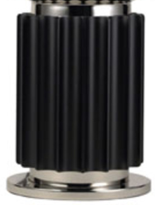

TACCIA
Hierarchial Decomposition
HOME | Description - Hierarchial Decomposition - CODE
HIERARCHIAL DECOMPOSITION
The lamp can be divided into two parts: the large glass bell and the stem.
Glass bell
 |
To build the bell was used in parametric function, which has as input the points of control and domination, that returns a rotational surface.
Stem
|  |
To build the stem was created before a large cylinder. After, it was built a small half cylinder using the function used for the bell but with PI domain instead of 2 * PI, which has been replicated by rotating and translating it, around the large cylinder. Finally all the parts have been integrated into a single structure.